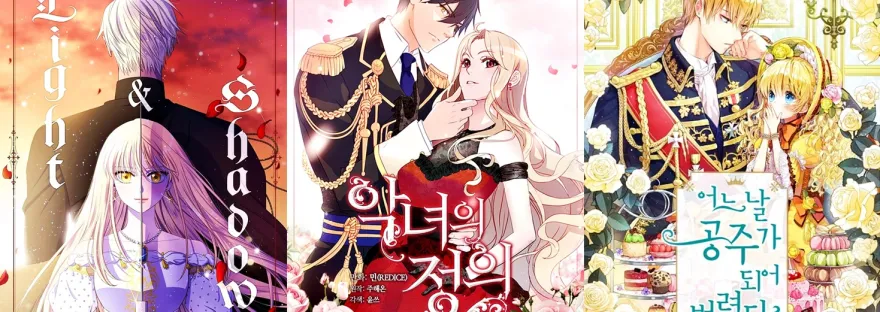
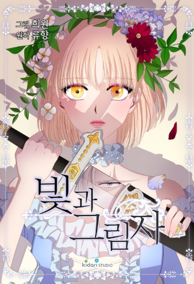
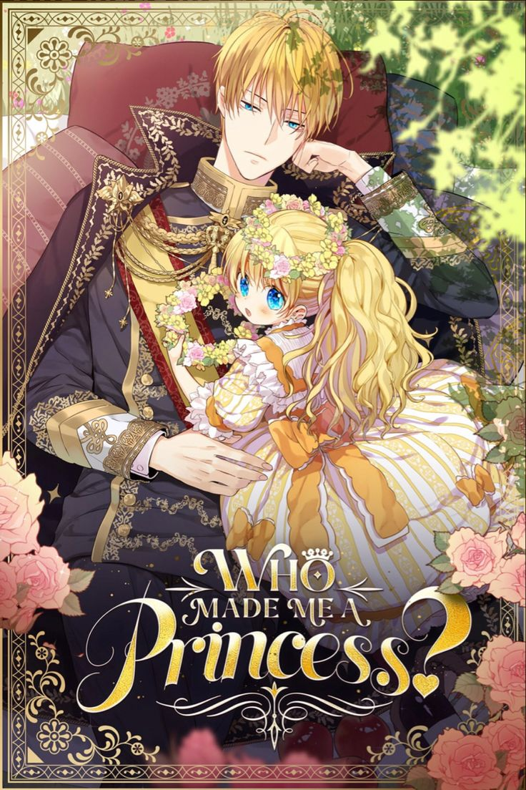
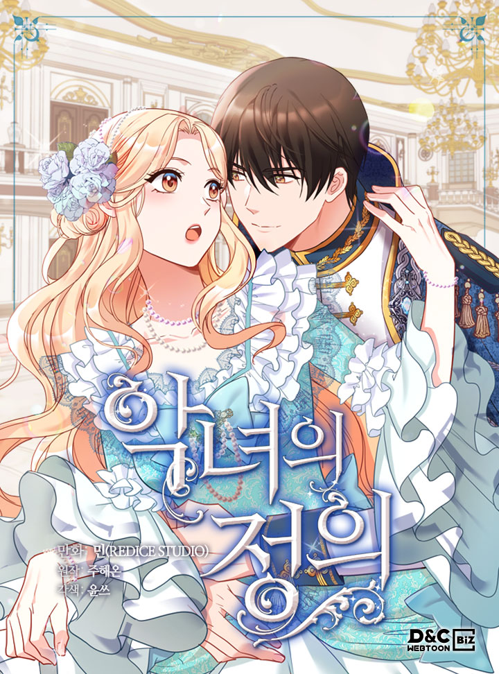

DESCUBRA NOVAS HISTÓRIAS
Bem-vindo ao nosso site de scans de mangás! Aqui você encontrará uma variedade de títulos para desfrutar. Explore nossa coleção e mergulhe em histórias emocionantes!
ROMANCES
LIGHT AND SHADOW

Sinopse: Foi um verdadeiro insulto quando a humilde e teimosa serva Edna veio a se casar com o duque Eli no lugar da nobre filha que ele esperava. Mas a ambiciosa serva esconde um segredo por trás de seu óbvio estratagema – um que poderia mudar toda a história do reino – os dois irão conseguir encontrar liberdade, redenção e amor sem usarem suas espadas um no outro?
WHO MADE ME A PRINCESS

Sinopse: Quando abri os olhos, me tornei uma princesa! Reencanei na protagonista de uma novel. Mas de todos os personagens deste romance, por que a princesa tem o destino de morrer pelas mãos do seu próprio pai biológico, o imperador!? Se eu quero sobreviver, não devo ser vista por ele. Um homem que não tem nem uma gota de sangue nem lágrimas para cair, aquele frio imperador Claude é quem atormenta Atanasia, a protagonista dessa história. Será que ela conseguirá sobreviver?
THE JUSTICE OF VILLAINOUS WOMAN

Sinopse: No dia em que perdi meu namorado para minha melhor amiga, caí no rio Han por engano. E quando acordei, me tornei filha de um famoso duque… ela era chamada Chartiana Altizer Cailon – que é conhecida como a vilã!? Meu destino também foi determinado no momento em que fui apontada como a próxima candidata a imperatriz. Existem duas candidatas: Irene, que é a amante do príncipe herdeiro e eu, Chartiana. Para proteger minha amada família dos planos malignos da corte, não posso deixar de me tornar a vilã do mal e conquistar a posição de imperatriz. Para ser feliz com as pessoas que amo, tornei-me a antagonista.
AÇÃO
SOLO LEVELING

Sinopse: Em um mundo onde portais para masmorras aparecem, os caçadores lutam para sobreviver. Sung Jin-Woo, o mais fraco de todos, se torna um caçador de nível S após uma experiência quase fatal.
THE BEGINNING AFTER THE END

Sinopse: Arthur Leywin, um rei reencarnado em um mundo de fantasia, busca viver uma vida melhor enquanto enfrenta desafios, magia e intrigas políticas.
THE STAR EMBRACING SWORDMASTER

Sinopse: Um guerreiro lendário que carrega o peso de sua história passada,lutando para proteger aqueles que ama em um mundo de magia e perigo.
Sobre Nós
Somos um grupo de entusiastas de manwhas, dedicados a trazer as melhores histórias para nossos leitores.
LOGIN
Entre em contato conosco para sugestões ou dúvidas:
- Telefone: (21) 97106-2544
- Email: danieldafloncrivellar@gmail.com